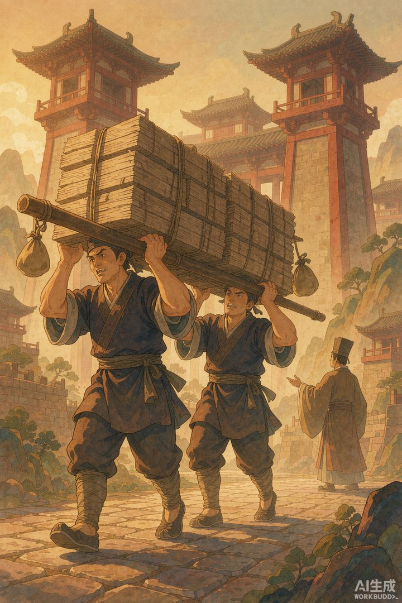
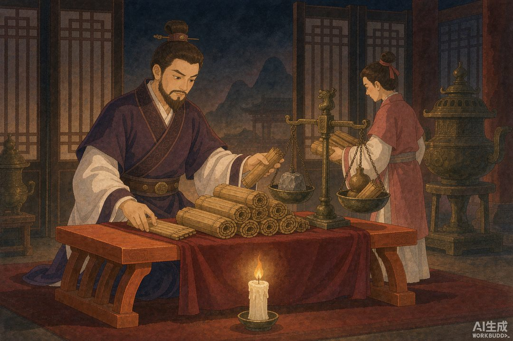
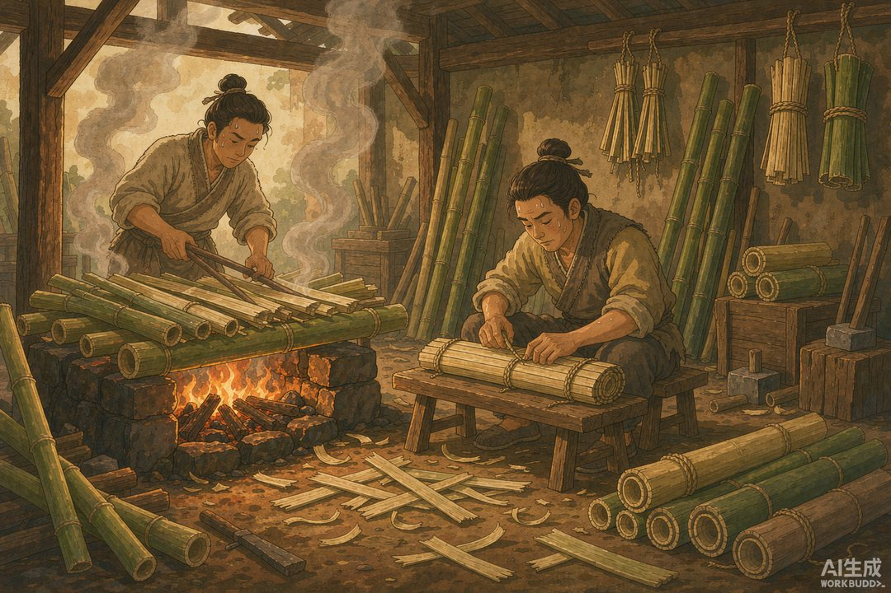

|
《信息传播那些事儿》卷二 · 竹简与封泥 · 第 19 篇 |
|
竹简的麻烦：写本书要扛一车 —— 文字终于能存住了，可惜它重得要命 |
|
 |
|
两个人才抬得动的自荐书：东方朔用三千片奏牍敲开了长安的门（AI 生成示意图） |
|
上一卷结尾说：文字一出现，靠嗓门吃饭的巫师、信使、演说家们全乱了套。可文字自己刚一上场，就碰上了它的第一桩麻烦——它太重了。在没有纸的年代，写一本书约等于扛一袋水泥，读一部史书约等于搬半台冰箱。这一卷，咱们就从这份"甜蜜的负担"讲起。 |
一 | 史上最重的自荐书：两个人才抬得动 |
汉武帝刚即位那几年，向全国发了一则"招聘启事"：招贤良，纳人才，有本事的都来长安面试。各地读书人闻风而动，行李箱里塞满了简历。
齐国有个叫东方朔的年轻人也来了。别人递简历，顶多一卷帛书、一捆竹简；他倒好，写了一封自荐书，用了三千片奏牍——根据《史记·滑稽列传》的记载，公车令（相当于朝廷收发室主任）一看这堆东西就傻了，叫来两个壮汉，"公车令两人共持举其书，仅然能胜之"：两个人一起抬，才勉强抬得动。
汉武帝也是个有脾气的，居然真读。从上往下读，读到哪儿停下，就用笔在那个位置画个"乙"字做记号，回来接着读。"读之二月乃尽"——这份简历，他整整读了两个月。
后世的学者帮我们算过账：历史学家邢义田先生测算，如果东方朔用的是标准竹简，三千简大约重9.5 公斤；如果是更宽的木牍，重量还要翻上好几倍。也就是说，这位仁兄扛来长安的，是一份接近十公斤的简历。
你说他为什么不写短一点？还真不能怪他啰嗦——在竹简时代，想要内容显得厚重，物理上就得真的厚重。这大概是"有分量"三个字最写实的年代。
|
 |
|
秦始皇的办公桌：每天必须批完一百二十斤竹简，才准睡觉（AI 生成示意图） |
二 | 秦始皇的 KPI：每天一百二十斤 |
东方朔的十公斤简历听起来夸张，跟秦始皇的日常工作量一比，就是小巫见大巫了。
《史记·秦始皇本纪》里有一句很著名的记载："天下之事无大小皆决于上，上至以衡石量书，日夜有呈，不中呈不得休息。"天下的事，不论大小都由皇帝一个人拍板；秦始皇给自己定的办公定额，是按重量算的——每天批完一石（一百二十斤）竹简，不批完不准休息。
一石是多少？考古学家实测过带刻度的秦权（官方标准秤砣），秦代一斤约合今天的 257 克，一百二十斤折算下来是三十多公斤。想象一下那个画面：宫人用扁担挑着竹简上朝，一头挂着秤砣，一头挂着文书，皇帝当天不把这三十公斤"读完"，就不睡觉。
更吓人的是换算成字数。按汉代竹简一枚写三十八字左右的通行密度推算，三十多公斤竹简约等于每天三十一万字的阅读量。各位今天刷短视频一小时都嫌累，人家秦始皇每天三十一万字，堪称"衡石量书"版 KPI 考核，还是自己给自己定的。
顺便说一句，这话原本出自方士侯生、卢生之口，是他们私下吐槽皇帝专权的原话——后来这俩人跑路，直接点燃了那场著名的焚书事件。这是后话，下篇再讲。
三 | 一部《史记》，五十公斤 |
皇帝批奏章是体力活，读书人藏书同样是体力活。
按照邢义田先生的测算，司马迁那部五十二万多字的《史记》，如果抄在竹简上，总重量约为五十一公斤——差不多一个成年人的体重。在汉代，拥有一部《史记》，意味着你家里得有一整架书，搬一次家得专门雇辆车。
战国名家惠施外出讲学，随身带的书要五辆车拉，后人用"学富五车"形容学问大。听着挺唬人，可按竹简的容量一算，五车竹简的字数放到今天也就一部稍长点儿的小说。倒不是古人学问浅，是载体实在太占地方。
竹简本身，也是一件费工夫的事。新竹有汁液，直接写容易蛀、容易变形，得先放在火上烤，把竹汁烤出来像人出汗一样——这道工序叫"杀青"，烤过的青皮刮去才好落墨。所以后来"汗青"成了史册的代称，文天祥写"留取丹心照汗青"，照的就是这片烤出汗的竹子。一卷书写成，要用熟牛皮绳把竹简编起来，孔子晚年读《易》，翻来翻去，把编简的牛皮绳都磨断了三次——这就是"韦编三绝"。
所以你看，在竹简时代，信息的每一环都是体力活：做简是体力活，写字是体力活，读书是体力活，藏书更是体力活。载体的重量，就是信息流通的成本。
|
 |
|
杀青：新竹要在火上烤出汗来，才能落墨防蛀——"汗青"一词由此而来（AI 生成示意图） |
四 | 帛书很轻，但你买不起 |
那有没有更轻的选择？有——缣帛，也就是丝织品。又轻又软，一卷帛书展开能写几万字，卷起来巴掌大，携带方便，还不怕折。
问题只有一个字：贵。丝帛在古代是硬通货，能换米换钱。汉代人甚至有"贫不及素"的说法——穷人连想都不敢想用素绢写字。东方朔那份三千奏牍，明代学者陈子龙算过一笔账：要是抄在绢帛上，不过几十卷而已。可那是东方朔赌上前途的豪赌，他赌不起帛书的价格。
于是整个竹简时代，普通读书人只能在"重"和"贵"之间二选一：竹简便宜但扛不动，丝帛轻便但买不起。信息被死死按在沉重的载体上，读书写字成了少数人的特权——不是因为内容稀有，而是因为搬运成本太高。
这就是文字登场后的第一个困境：它让信息第一次可以复制、可以留存，却没能让它自由流通。而更麻烦的事还在后面——当权力发现这些沉甸甸的竹简上，写满了读书人对时政的议论时，它做出了一个简单粗暴的决定。
那个决定，让中国历史上最著名的一场大火烧了起来。
本篇数字锚点 |
|
120 斤 秦始皇每日批阅竹简定额 |
31 万字 按每简 38 字折算的每日阅读量 |
|
|
3000 简 东方朔自荐书用量 |
51 公斤 《史记》全书竹简总重测算 |
|
下篇预告 · 第 20 篇 《焚书坑儒：第一次大规模"内容删除"》——竹简这么重、这么贵，写下来的每个字都是宝贝。可偏偏有人觉得，最省事的办法是让这些字从世上彻底消失。一场大火，烧出了权力面对信息的第一个本能反应：控制源头。 |
史料参考：《史记·秦始皇本纪》《史记·滑稽列传》《汉书·东方朔传》，邢义田《汉代简牍的体积与重量使用估算》；本文配图为 AI 生成示意图。